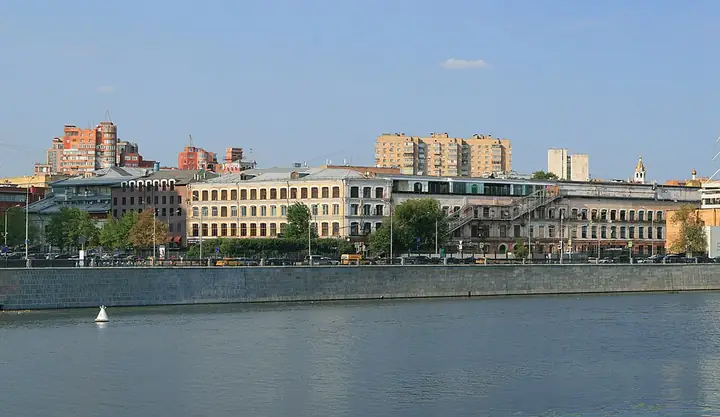

Фото: Ludvig14, CC BY-SA 4.0 · Wikimedia Commons
Раки и караоке · ЦАО
Раковарня
Раки, морепродукты и караоке до шести утра на Трёхгорке.
- ₽₽ · 1 500–3 000 ₽ на человека
- в 2 планах
Позвать сюда: РаковарняОткрыть в каталоге: РаковарняМаршрут до места: Раковарня
Адрес и детали
- Адрес
- Рочдельская ул., 15, стр. 30
Открыть на Яндекс Картах (в новой вкладке) - Метро
- м. Краснопресненская
- Округ
- Центр (ЦАО)
- Цена
- 1 500–3 000 ₽ на человека
- Проверено
- работает — проверили в октябре 2026
Планы с этим местом 2
- Краснопресненские бани · Баня и хамам · м. Улица 1905 года
- 13 минут пешкомРаковарня · Раки и караоке
Финская сауна, хамам и бассейн в Краснопресненских банях, а потом через Трёхгорку в «Раковарню» — раки, морепродукты и караоке до шести утра.
Открыть план: Баня на Пресне и ракиПозвать сюда: Баня на Пресне и раки
Фото: Никонико962, CC BY-SA 4.0 · Wikimedia Commons
- Раковарня · Раки и караоке · м. Краснопресненская
Раки, морепродукты и караоке до шести утра на Трёхгорке.
Открыть план: Раки и караокеПозвать сюда: Раки и караоке
Фото: Ludvig14, CC BY-SA 4.0 · Wikimedia Commons


Похожие рядом

Что ещё рядом

Как позвать
- Выбери план, место или событие — в карточке адрес, цены и маршрут в Яндекс Картах.
- Нажми «Позвать сюда» — соберётся приглашение-игра для свидания или голосование для компании.
- Отправь ссылку в любой мессенджер: тебе ответят, а компания отметит, куда и когда может. Бесплатно и без регистрации.